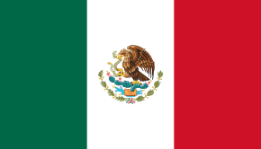
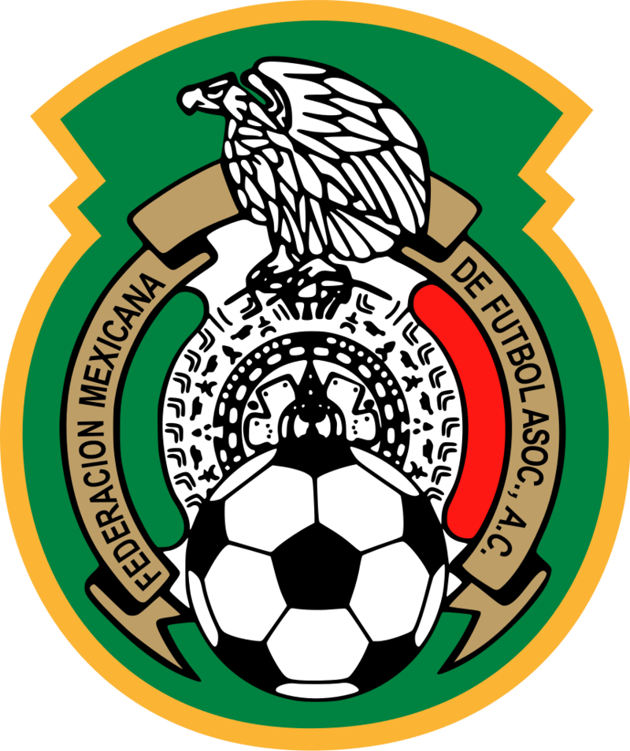

멕시코
Mexico


FIFA Ranking: 15위
멕시코의 특징
- 지역예선 고정 1위
- 6회 연속 16강, 월드컵 2회 개최
- 유럽 빅리그에서 뛰는 선수 다수 포진
- 한국이 가장 붙어 볼만한 상대
감독
후안 카를로스 오소리오
- 2015년 10월 감독 부임
- 독특한 팀훈련 방식으로 재창조라는 별명
- 럭비팀을 보고 영감을 얻어 멘탈 코치를 영입, 정신력 강화
2018 멕시코 대표팀 주요 선수
- (GK) 헤수스 코로나 - 크루즈 아줄
- (GK) 기예르모 오초아 - 스탕다르 리에주
- (DF) 디에고 레예스 - FC 포르투
- (DF) 오스왈도 알라니스 - 헤타페
- (DF) 미겔 라윤 - 세비야
- (DF) 엑토르 모레노 - 레알 소시에다드
- (MF) 조나탄 도스 산토스 - LA 갤럭시
- (MF) 마르코 파비안 - 프랑크푸르트
- (MF) 지오반니 도스 산토스 - LA갤럭시
- (FW) 헤수스 마누엘 코로나 - FC 포르투
- (FW) 치차리토 하비에르 에르난데스 - 웨스트 햄
- (FW) 라울 히메네스 - 벤피카
- (FW) 이르빙 로사 - PSV 아인트호벤
하이라이트 영상